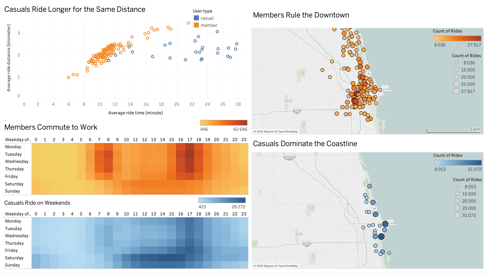
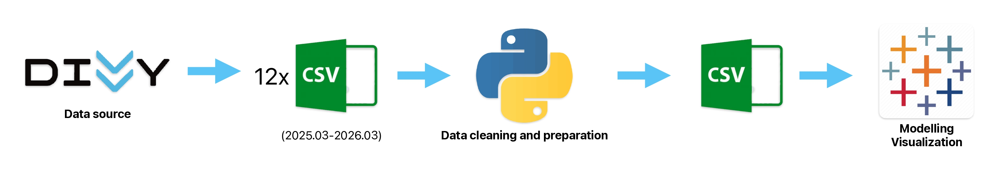

Cyclistic Bike-Share Analysis:
Converting Casual Riders to Annual Subscribers

Business Problem & Context
Cyclistic is a successful bike-share program in Chicago that features a network of more than 5,800 bicycles and 600 docking stations. The company's finance analysts have concluded that annual members are much more profitable than casual riders, who only purchase single-ride or full-day passes.
Design marketing strategies aimed at converting casual riders into annual members. In order to do that, however, the team needs to better understand how annual members and casual riders differ, why casual riders would buy a membership, and how digital media could affect their marketing tactics.
Data Overview
This analysis utilizes 12 months of public, historical trip data provided by Motivate International Inc. Structured in monthly files detailing specific trip metrics, the dataset is highly credible and unbiased, generated directly by the bike-share system's geotracking infrastructure. Data integrity was verified by standardizing column formats and running descriptive statistics. To ensure security, all Personally Identifiable Information (PII) has been excluded. While this strict privacy measure protects users, it presents a minor analytical limitation, as it prevents tracking repeat casual riders or linking pass purchases to specific individuals.
Data Aggregation & Pipeline Automation with Python

Due to the multi-gigabyte volume of the 12-month dataset, standard spreadsheet applications failed to process the load, necessitating Python (Pandas) for data pipeline engineering.
Key Technical Milestones:
- Data Integration: Programmatically merged 12 distinct monthly CSV files into a single consolidated annual dataframe.
- Feature Engineering: Generated
ride_length(trip duration) andday_of_weekto isolate granular usage patterns. - Data Auditing & Filtering:Targeted and removed systematic anomalies, including negative trip durations, ultra-short trips (<30 seconds) with identical start/end stations indicating mechanical faults, and excessively long trips exceeding the 99th percentile, which likely represent stolen bikes or system errors.
- Null-Value Handling: Isolated missing station telemetry data specific to electric bikes to protect the spatial integrity of the analysis.
Analysis & BI Insights
Aggregated analysis revealed structural divergence in user behavior and ride cadence between the two cohorts:
- The Commuter Footprint (Members): Annual member usage heavily clusters around standard commuting windows (06:00–09:00 and 15:00–19:00) on weekdays, confirming utility-driven transit patterns.
- The Leisure Footprint (Casuals): Casual rider volume peaks sharply during weekends (09:00–18:00) and late-afternoon leisure windows on weekdays. A localized sub-trend also emerged during late-night hours on Fridays and Saturdays, isolating a weekend nightlife demographic.
- Duration Metrics: Despite lower overall ride counts, casual riders maintain a substantially higher average time spent per trip compared to annual members, especially along the waterfront and around famous landmarks.
- Geographical Usage Patterns: A distinct spatial separation exists between the two user groups. Casual rider activity is heavily concentrated along the waterfront and coastal areas, indicating leisure and tourism use. Conversely, annual member usage is centered within the downtown business district (the Loop), reinforcing the utility-driven commuter profile.

Strategic Recommendations
Based on the insight gaps identified in the data, I propose the following these strategic recommendations for Cyclistic's management:
"Smart Pause" Feature for Casual Riders
The Action: A free 10–15 minute in-app parking lock (once per trip) so no one else can take the bike during sightseeing stops.
The Value: Eliminates customer friction for waterfront tourists, increases satisfaction, and prevents churn to competing e-scooters. Crucially, this user experience serves as a hook to incentivize Casual riders to transition into long-term Annual Members.
2. Targeted Lifestyle Marketing
The Action: Partner with 1–2 major attractions (e.g., Navy Pier) to give an instant 15% discount code upon upgrading to an Annual Membership.
The Value: High-impact Conversion Rate Optimization (CRO) that captures active Casual riders at their peak location and converts them into high-Lifetime Value (LTV) subscribers.